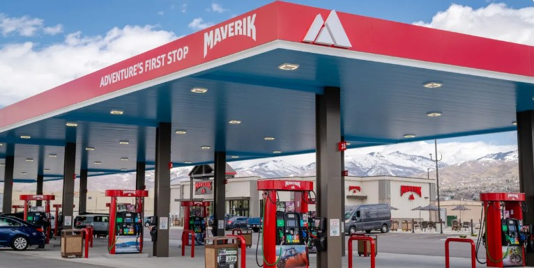

Want the Full Story?
My resume includes project impact, systems used, and recommendations from executive leaders I’ve worked with.
Business Analytics & Finance | SQL · Power BI · Excel · Systems Thinking · Forecasting | Translating Data into Decisions
@felixjenajnr
I create solutions that help leaders make better decisions - blending analytics, finance, and strategy. These projects reflect how I think, solve problems, and drive outcomes across different tools and industries.

What makes a location profitable? I used mapping, regression, and infrastructure data to uncover key drivers for Maverik’s store performance - supporting a smarter market expansion strategy. Built in R, presented with visuals for executive clarity.

How do you scale responsibly across multiple countries? I analyzed cost drivers across 5 African nations and proposed lease-to-own models, prefabrication, and consolidation plans to support long-term sustainability and fiscal alignment.
Used 300k+ flights to model how delays compound. Key finding: each minute of departure delay adds 1.02 minutes to arrival time. This project shows how predictive models can inform resource planning and improve customer experience.
Designed a Google Sheets dashboard that tracks lap times, rankings, and skill gaps across weekly go-kart races. Behind the fun is a serious look at performance tracking, benchmarking, and data-driven storytelling for improvement.
Built an interactive Power BI tool for evaluating investment performance across multiple time horizons. Users can explore fund categories, compare returns, and assess risk based on real historical data. Useful for financial planning and client education.
This Excel dashboard visualizes survey results to guide programming and marketing decisions for a local theater. Uses dynamic charts, slicers, and summaries to reveal audience preferences and improve engagement strategies.
My resume includes project impact, systems used, and recommendations from executive leaders I’ve worked with.